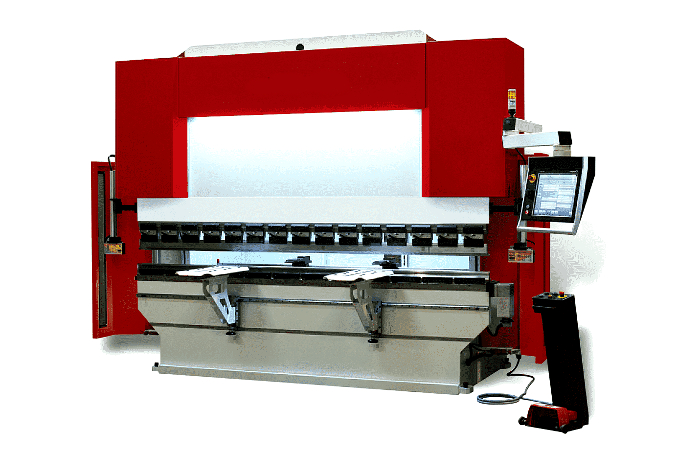

A press brake is a machine used to bend sheet metal, sheet metal shear, or metal plates. There are quite a few different variations of presses; some use hydraulics to bend metal, while others use air pressure. Pressing out metal requires precision and great attention to detail; if it is not done correctly, you run the risk of the metal breaking or bending incorrectly.
When it comes to bending metal, the press brake is the most widely used machine in a metalworking shop. They can handle anything from small, single-part jobs to large, multi-part assemblies, so you'll need to get good at it. But there are some mistakes you can make when using your press brake that, when avoided, can save you a lot of trouble in the long run.
You should consistently execute pre-work checks to make sure that your machine meets all the operator's expectations. You should be well prepared to record all the pre-work commands your supervisor asks of you on a checklist.
Such things as ensuring the profit margin is perfectly aligned and guaranteeing that the flanges are an identical length are crucial to a success and fixing any bending errors that you have overlooked. Become certain to consult with your boss about how you can set up an efficient process.
Operators, even those with a great deal of experience, can slip up when they bend the blade the wrong way. Among the most common reasons is that operators may have been too focused or misread the instructions.
You may believe something is supposed to occur in a certain way based on how it is written. In reality, however, this reversal causes the effect to occur. Every detail needs to be taken into account to create a true and precise bend.
One handy trick is to put the metallic pieces you'll be bending down in the same orientation they were meant to be bent. That way when you transfer them to the press brake, you won't have to modify their orientation and they'll be ready to go in the proper position.

An effective way to guarantee a successful bend is to thoroughly survey the instructions and be certain that every tiny detail is considered and comprehended. At times, the most silly errors happen because a particular measurement was overlooked or was misunderstood.
Being familiar with the terms and procedure codes will assist you understand the directions calmly and easily since some things are published in a particular way. Working out a basic understanding of mathematics will also help immensely when learning breaking directions.
Some common mistakes when choosing the bend involve bending in the wrong direction, misinterpreting or misreading the tolerances and overlooking certain instructions. Certain components may require adaptations after bending.
This advice does not only apply to press brake operators. All sheet metal machinery operators must make sure that instructions are thoroughly and carefully read to ensure a smooth operation.
A press brake needs to be equipped with the proper tools to ensure that the machine can be used efficiently without issues. The press brake must use the right tools or else faulty operations could fail to materialise as planned or replace the tool's intended use.
You should also be aware of the type of bend that's required. Bottoming while you were intended to be air bending may bring unnecessary stress on the machine and accordingly ruin the bend (and damage the device).
With the aid of classes, the right hardware must be checked before being used to be sure they're still in excellent condition. Worn out tools will provide substandard bends that are not up to the required standard that the final product should be.
If you’ve had experience operating a press brake, you’re probably familiar with the common mistakes that are made. If you’re unfamiliar with operating a press brake, you may be making these same mistakes. When using a press brake to bend metal, there are a number of common mistakes that are made. We hope that this post about common mistakes operators make when operating a press brake has been helpful to you.